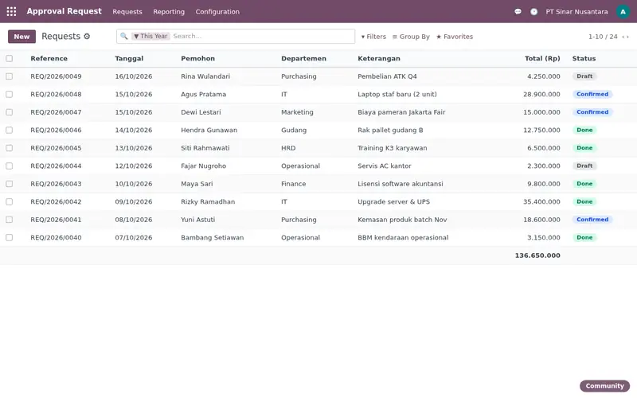
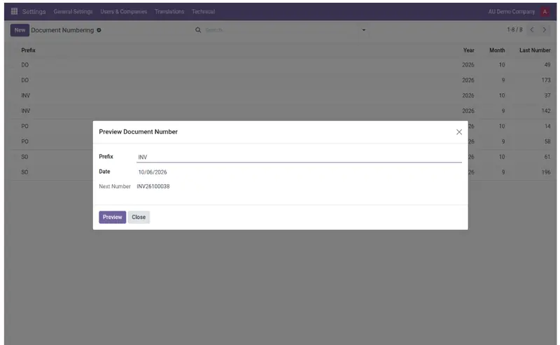
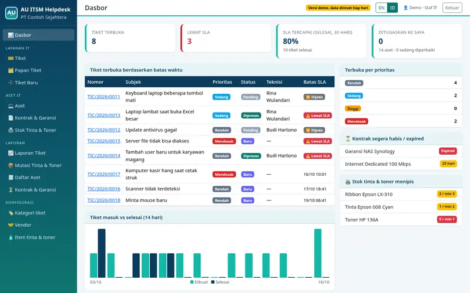
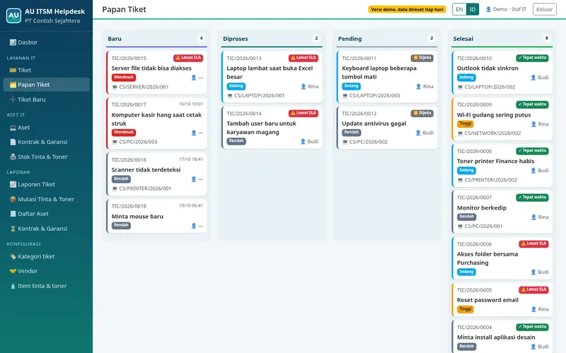
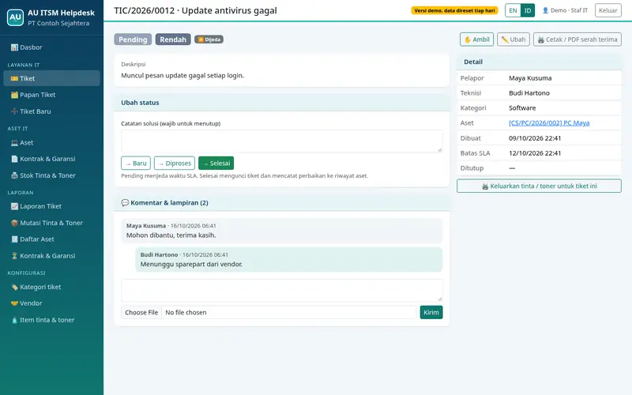
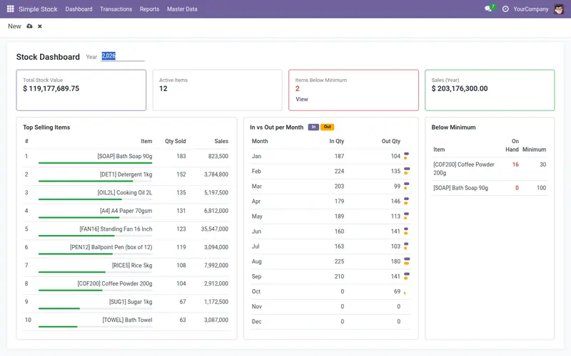

Jasa & Layanan
Jasa Pembuatan Addons & Modul Custom Odoo 18 (Community/Enterprise)
Modul Odoo 18 sesuai alur bisnis Anda: fitur baru, alur approval, penomoran, laporan PDF/Excel, dashboard, integrasi API atau marketplace, sampai migrasi modul lama.
Mulai Rp1.500.000 · harga final sesuai ruang lingkup
Ringkasan
Modul Odoo 18 sesuai alur bisnis Anda: fitur baru, approval, penomoran, laporan PDF/Excel, dashboard, dan integrasi API. Harga mulai, final sesuai scope.
Fitur yang Anda dapat
- Modul baru sesuai alur bisnis, untuk Odoo 18 Community, Enterprise, atau Odoo.sh
- Alur approval bertingkat, status dokumen, dan notifikasi ke user yang relevan
- Penomoran dokumen per perusahaan, cabang, atau periode — termasuk preview nomor sebelum posting
- Laporan PDF dan Excel, plus dashboard KPI yang bisa disaring
- Integrasi API, marketplace, atau sistem lain (termasuk SAP B1 bila dibutuhkan)
- Multi-company, hak akses, dan penyesuaian form yang sudah ada
- Migrasi atau rewrite modul lama agar jalan di Odoo 18
- Uji di database demo sebelum dipasang ke produksi
- Serah terima source code dan catatan singkat cara pakai
Contoh layar
Klik gambar untuk memperbesar. Layar memakai data demo atau ilustrasi berlabel data dummy — bukan data klien.


Daftar approval request di Odoo 18 (data demo). Penomoran dokumen per prefix, tahun, dan bulan (AU Demo Company).
Penomoran dokumen per prefix, tahun, dan bulan (AU Demo Company).


Preview nomor dokumen sebelum posting, tanpa mereservasi nomor.

Contoh modul custom: dasbor ITSM Helpdesk (PT Contoh Sejahtera, data demo).

Papan tiket dengan prioritas dan SLA (data demo).

Detail tiket di modul custom ITSM (PT Contoh Sejahtera, data demo).

Dasbor stok modul Simple Stock (data demo). Modul Import/Export — contoh addons yang sudah terbit di Odoo Apps.
 Modul multi-company — contoh addons siap pakai di Odoo Apps.
Modul multi-company — contoh addons siap pakai di Odoo Apps.
Paket & harga
Modul kecil
mulai Rp1.500.000Laporan, penomoran, atau approval sederhana.
Modul alur bisnis
mulai Rp5.000.000Alur kerja baru yang menyentuh beberapa menu atau dokumen.
Modul besar atau integrasi
mulai Rp12.000.000Integrasi API, marketplace, atau modul yang lingkupnya luas.
Harga dihitung per ruang lingkup (scope), bukan per jam. Angka di atas adalah harga mulai.
Skema kerja
Pertanyaan singkat
Apakah harga di halaman ini sudah final?
Belum. Angka di situs adalah harga mulai. Harga final saya kirim lewat penawaran tertulis setelah ruang lingkup (scope) disepakati.
Bagaimana cara mulai?
Cukup DM saya di Threads untuk konsultasi gratis. Setelah kebutuhan jelas, saya buatkan ringkasan scope dan penawaran tertulis.
Apa yang termasuk support 3 bulan?
Perbaikan bug dari pekerjaan yang sudah diserahkan, pertanyaan pemakaian, dan penyesuaian kecil. Perubahan lingkup baru dihitung terpisah.
Apakah ada biaya langganan bulanan?
Untuk pengerjaan jasa, tidak ada biaya langganan. Support ringan 3 bulan sudah termasuk. Maintenance tahunan bersifat opsional, sekitar 15–20% per tahun. Untuk aplikasi custom, biaya hosting dihitung terpisah jika Anda ingin saya yang kelola.
Apakah bisa dipasang di Odoo.sh dan Community?
Bisa. Saya sesuaikan modul dengan edisi yang Anda pakai (Community, Enterprise, atau Odoo.sh).
Mau bahas kebutuhan Anda?
Konsultasi gratis. Cukup DM saya di Threads. Saya balas dengan pertanyaan ringkas, lalu penawaran tertulis bila lingkupnya sudah jelas.
DM @yohanesandy.erp